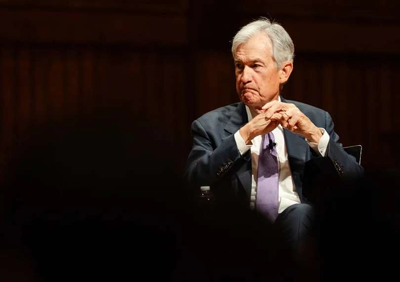

# Business
Private Payrolls in the U.S. Went Up in October
Private payrolls in the U.S. rose sharply, which showed that the job market was getting better again, even though some big companies were still laying off workers.

The extraordinary clash at the Federal Reserve between Jerome Powell and Donald Trump entered new territory when Powell said he would remain on as a governor even after his term as chair ends May 15. He stated he would exercise his right to stay on the board “for a period of time to be determined.”
Powell appeared concerned about maintaining the Fed’s independence amid intense pressure from the Trump administration. He warned that ongoing attacks risk damaging the institution and its ability to conduct monetary policy without political influence.
Trump responded sharply, criticizing Powell and questioning his motives for staying. The president has long been frustrated with Powell for not cutting interest rates more aggressively, which he believes would stimulate economic growth.
While it is unusual, it is not unprecedented for a former Fed chair to remain as a governor. Powell indicated he would “keep a low profile” under incoming chairman Kevin Warsh.

This is really about how independent the Federal Reserve can stay under pressure. When Jerome Powell says he’ll stick around even after his chair term ends, it signals he’s worried about protecting the institution — especially as tensions with Donald Trump ramp up. At the same time, disagreements inside the Fed and rising inflation make the situation even more delicate.
Powell’s decision is closely tied to an ongoing investigation into renovation cost overruns at the Federal Reserve. He said he would not leave until the probe is “well and truly over,” emphasizing the importance of transparency and accountability.
The Justice Department had launched a criminal probe into the issue, which Powell described as an attempt to erode the Fed’s independence. That investigation has since been dropped for now, though it could be reopened if new evidence emerges.
U.S. Attorney Jeanine Pirro referred the matter to the Fed’s inspector general, removing the criminal element and easing concerns that had complicated leadership transitions.
Powell said recent developments have encouraged him but noted that events over the past three months influenced his decision to remain in place until the situation is fully resolved.
Powell said this after the Federal Reserve agreed to leave interest rates the same for the third meeting in a row, between 3.50% and 3.75%. The choice illustrates that there is still a lot of uncertainty, especially because oil prices are going up due of the war in the Middle East.
Inflation is remains high, in part because energy prices are going up all around the world. This makes policymakers more careful.
The choice demonstrated that there were substantial disagreements within the Fed. Four out of twelve voting authorities were against it, which is the highest disagreement since 1992. Some members wanted rates to go down, while others didn't like the idea that rates would go down in the future.
Analysts stated that this level of dissent suggests that the argument will get even more intense, especially because Kevin Warsh is ready to take over as chair.
Trump has repeatedly criticized Powell since returning to office, urging faster rate cuts and attempting to influence Fed policy. His administration also sought to remove Fed governor Lisa Cook over separate allegations, adding to tensions.
Kevin Warsh, Trump’s nominee to replace Powell, moved closer to confirmation after the Senate Banking Committee advanced his nomination. However, the process has been contentious, with Democrats warning of political interference in the Fed.
Senators including Elizabeth Warren and Raphael Warnock raised concerns about the nomination, while Republican Senator Thom Tillis initially opposed it before changing his stance after developments in the investigation.
Powell expressed confidence in Warsh, noting that he had committed to maintaining the Fed’s independence.
The Fed had already started moving toward lower interest rates late last year, but things have gotten more complicated since then. The conflict involving the U.S., Israel, and Iran has pushed up energy prices and disrupted supply chains, and that’s making inflation tougher to control.
Because of that, the path ahead isn’t as clear anymore. What looked like a steady move toward rate cuts now comes with more uncertainty, especially if rising costs keep putting pressure on prices.
People were worried that the Fed would keep rates the same for now, but Powell's situation and the political pressure on the central bank are also getting a lot of attention.
In short, the Federal Reserve is in a tough spot right now. They have to keep inflation under control, deal with tensions around the world, and keep things stable, all while everyone is watching them closely.
Watch how the leadership transition to Kevin Warsh plays out, and whether political pressure continues to build. Also keep an eye on interest rate decisions — if inflation stays high and divisions inside the Fed grow, the path forward could get even more uncertain.
Leave a Reply